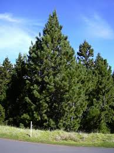
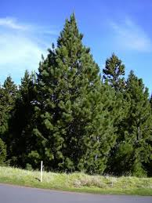

¿Qué es un Pino?
Son árboles que pueden alcanzar hasta 30 m de altura, con un tronco recto sobre el que se disponen varios pisos de ramas en posición horizontal. La copa suele ser piramidal, si bien en los ejemplares más antiguos se pierde esta forma.


 

Tiempo de crecimiento: crecen entre 30 y 90 cm al año en sus primeras décadas, pudiendo tardar entre 10 y 20 años en alcanzar un tamaño adulto
Clima ideal: crecen entre 30 y 90 cm al año en sus primeras décadas, pudiendo tardar entre 10 y 20 años en alcanzar un tamaño adulto
Cuidados: necesita sol pleno o semisombra, riegos profundos y moderados (menos en invierno), un sustrato bien drenado y ligeramente ácido, y fertilización en primavera/otoño; es crucial evitar el encharcamiento para prevenir pudrición de raíces, y poda ocasional para forma y salud, vigilando plagas.
Importancia: importancia ecológica (oxigena el aire, fija el carbono, previene erosión, refugio animal), económica (madera para construcción, muebles, papel, resinas, piñones comestibles) y social (árboles navideños, uso medicinal del té de agujas, reforestación)
⬅ Regresar